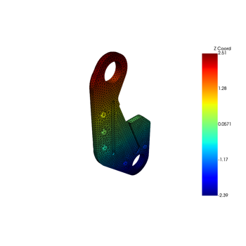

Full examples using PyMAPDL#
These examples demonstrate full examples using the PyMAPDL module.

MAPDL 2D Plane Stress Concentration Analysis
MAPDL 2D Plane Stress Concentration Analysis

3D Stress Concentration Analysis for a Notched Plate
3D Stress Concentration Analysis for a Notched Plate
Basic Thermal Analysis with PyMAPDL
Basic Thermal Analysis with PyMAPDL
3D Acoustic Analysis
Basic DPF-Core Usage with PyMAPDL
Basic DPF-Core Usage with PyMAPDL
Static analysis of a corner bracket
Static analysis of a corner bracket

Cyclic Analysis
Static Cyclic Analysis
Thermal-structural analysis of exhaust manifold
Thermal-structural analysis of exhaust manifold

Plotting and Mesh Access
Structural Analysis of a Lathe Cutter
Structural Analysis of a Lathe Cutter
MAPDL 3D Beam Example

MAPDL modal beam analysis example
MAPDL modal beam analysis example
Path Operations within PyMAPDL and MAPDL
Path Operations within PyMAPDL and MAPDL
Pressure Vessel

CFX pressure data mapping to structural blade
CFX pressure data mapping to structural blade
Running an input file - spotweld SHELL181 example
Running an input file - spotweld SHELL181 example
Torsional load on a bar using SURF154 elements
Torsional load on a bar using SURF154 elements
Example Thermal Transient Analysis
Example Thermal Transient Analysis